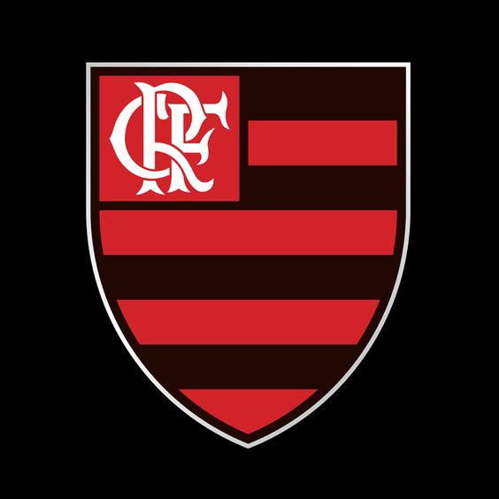

Não podemos deixar de começar essa lista com um dos maiores nomes de todos os tempos do esporte rubro-negro. Arthur Antunes Coimbra é o nome do fera, também chamado, há muito, de “Galinho de Quintino”. É um dos ídolos mais venerados do Flamengo, o ex meio-campista ambidestro revolucionou o futebol na sua época, mostrando amor pelo esporte e pelo time.
Na sua carreira, fez 587 gols, por isso é o primeiro no ranking de jogadores que tem mais gols na história do clube. Além de ostentar um título de terceiro maior jogador brasileiro do século XX, assim como o quinto maior do continente Sul-Americano.
Ainda, ele tem um lugar especial no Hall da Fama da FIFA, ao lado de grandes nomes como Pelé, Didi e Garrincha. Pelo Mengão, ganhou uma Libertadores, uma Copa Intercontinental, além dos vários Campeonatos Brasileiros. Hoje, atua como técnico, e toda a sua carreira o faz inesquecível entre os torcedores do Mengão.

Vamos contar um pouco da história de um dos maiores ídolos do Mengão. Júnior é considerado o segundo maior ídolo do Rubro Negro, depois de Zico.
Apesar de ter o perfil típico do carioca da gema, Leovegildo Lins Gama Júnior nasceu em João Pessoa. O pequeno paraibano migrou aos 5 anos com sua família para o Rio, e foi morar em Copacabana.
Aos 9 anos, o “Maestro”, apelido que ganhou mais tarde por ser um líder para nova geração, já era o melhor jogador do mirim do Juventus, um time de futebol de praia. A paixão de Júnior era jogar na areia, de pés descalços. Essa aversão por chuteiras o fez desistir de um teste que foi convidado no Flamengo.
Júnior, ainda na adolescência, percebeu que o futebol de areia não iria dar muito futuro. Ele deixou de lado o esporte que ainda engatinhava na época, e foi jogar futebol de salão no tradicional Clube Sírio e Libanês.Quando entrou em quadra, seu talento transbordou na hora, foi um pulo imediato para as categorias de base do Flamengo.
Assim como nos outros times que tinha passado antes, a carreira de Júnior logo deslanchou no Flamengo. Ele entrou para o time profissional em 1973, e em 74 já tinha virado xodó da torcida com dois gols na conquista do título carioca contra o América.
O Flamengo viveu anos dourados entre 1978 e 1993. Além da dupla majestosa Júnior e Zico, o time da Gávea contou com craques como Raul, Leandro, Tita, Adílio e Nunes nesse período. O torcedor flamenguista celebrou uma série incrível de conquistas: Tricampeão Brasileiro, em 1980, 1982 e 1983, Campeão da Libertadores e do Mundial de Clubes em 1981.
Ídolo do Flamengo (figurou na 10ª posição entre os maiores ídolos de futebol da história do clube, em um ranking elaborado por especialistas dos jornais O Globo e Extra em 2020), Adriano foi um dos melhores atacantes do mundo em meados da década de 2000: ele teve cinco temporadas magníficas na Itália com as camisas do Parma e da Internazionale, respectivamente, ganhando o apelido de L'Imperatore (o Imperador), antes de um declínio profissional devido a morte de seu pai. Adriano conquistou quatro Scudettos pela Inter, e depois de retornar ao Brasil, ganhou dois Brasileirões: um pelo Flamengo, sendo destaque, e outro pelo Corinthians.
Após estrear na Seleção Brasileira aos 18 anos, foi considerado o sucessor a longo prazo de Ronaldo. Na ausência do Fenômeno, coube a ele levar o Brasil ao título da Copa América de 2004, recebendo o prêmio de melhor jogador e recebendo a Chuteira de Ouro como artilheiro da competição, com sete gols. Ele também conquistou a Copa das Confederações FIFA de 2005, sendo novamente melhor jogador e artilheiro, dessa vez com cinco gols. Na Copa do Mundo FIFA de 2006, a única que disputou, Adriano fez parte do bastante elogiado "quadrado mágico" da Seleção ao lado de Ronaldo, Ronaldinho Gaúcho e Kaká. No entanto, o quarteto decepcionou na Alemanha e não obteve êxito na conquista do hexacampeonato.
Adriano, chamado de “Imperador” na sua trajetória pelo Mengão. Jogando junto com Pet, estava presente na conquista do Tri Campeonato Carioca. Assim como seu colega de time, voltou em 2009 para a conquista do hexa Brasileiro do Mengão com os seus chutes potentes de esquerda. Em sua passagem pelo time, ele fez 46 gols e 13 assistências. É um ídolo mais recente, até hoje admirado.
O jogador teve duas passagens pelo clube carioca, no qual se tornou ídolo da torcida.
Sua primeira passagem pelo clube, foi no início dos anos 2000. Em pouco tempo após sua chegada, o gringo ganhou seu primeiro título estadual pelo clube. O status de ídolo do clube, foi conquistado apenas em 2001, após um gol de falta aos 43 minutos do segundo tempo, dando o título ao Flamengo sobre o seu maior rival, o Vasco da Gama. O feito lhe rendeu prêmios e homenagens.
Dejan Petkovic iniciou sua segunda passagem pelo Flamengo 7 anos depois de deixar o clube, em um acordo para diminuir a dívida do time com o jogador. Escolheu o número 43 para lhe dar sorte.
Seu melhor momento na segunda passagem foi no Campeonato Brasileiro de 2009. Dejan ajudou o Flamengo a sair da zona de rebaixamento, e conquistou o Campeonato nacional pelo clube, após gols, assistências e boas atuações pelo clube.
No Flamengo, foi campeão do Campeonato Carioca de 2000 e 2001, Copa dos Campeões 2001, Troféu Rei do Rio 2009, e Campeonato Brasileiro de 2009.
Gabriel, mais conhecido como “Gabigol” entrou no pódio dos ídolos do time por sua atuação incrível no ano de 2019, época de grandes vitórias para o Mengão. Formado no time de base do Santos, na Vila Belmiro, o jogador, depois de passar por times europeus e alguns brasileiros, veio para o Flamengo e conquistou rapidamente o seu lugar como um dos maiores do time de todos os tempos.
Depois da vitória pelo Campeonato Carioca, junto com todo o time, Gabigol venceu o Brasileirão, inspirando o Bordão “Hoje tem gol do Gabigol”. Além disso, ele se destacou na Libertadores, fazendo dois gols sobre o River Plate. Tudo isso foi realizado com 23 anos apenas e o jogador segue mostrando todo o seu talento.
Apesar de estar apenas em sua quarta temporada, Gabigol tem boa chance de entrar no top-10 de artilheiros do Flamengo ainda em 2022. Atualmente com 115 gols, o atacante é o 16º entre os maiores goleadores da história do Flamengo.